JobCloud · AI assistant for jobs.ch
From a blank search box to a useful first conversation
- Role
- Product Designer
- Team
- FIND team; worked with product, engineering, and research support
- Scope
- Problem framing, interaction and conversation design, prototype, and moderated usability testing
- Timeline
- Approximately two months
- Status
- Tested prototype; not launched
- Research
- Two rounds of moderated usability testing, six participants in each round
I designed and tested a conversational job-search assistant for jobs.ch that helps new visitors express what they want in their own words, clarifies their intent, and turns it into a more useful job search.
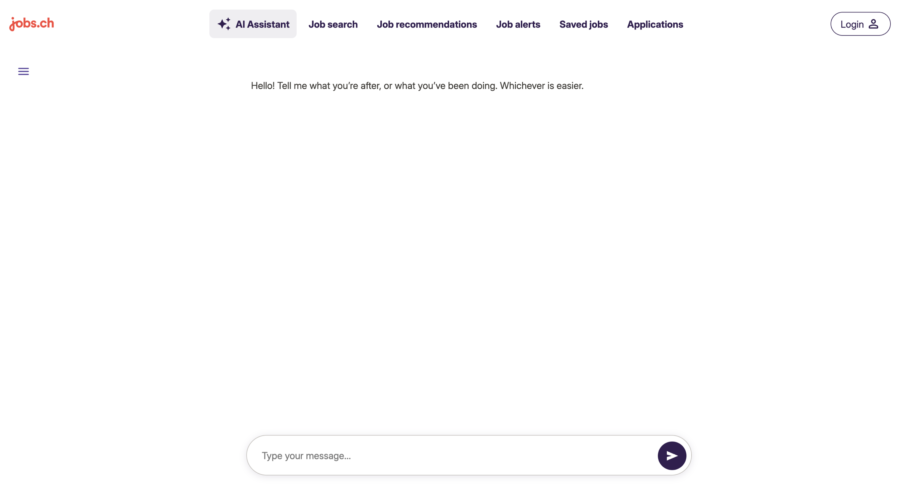
Starting point
The platform’s strategy was to keep the familiar search experience and add an agentic approach alongside it, as a secondary way in. I added a new AI Assistant tab to the central navigation, where users already get an overview of everything available to them.
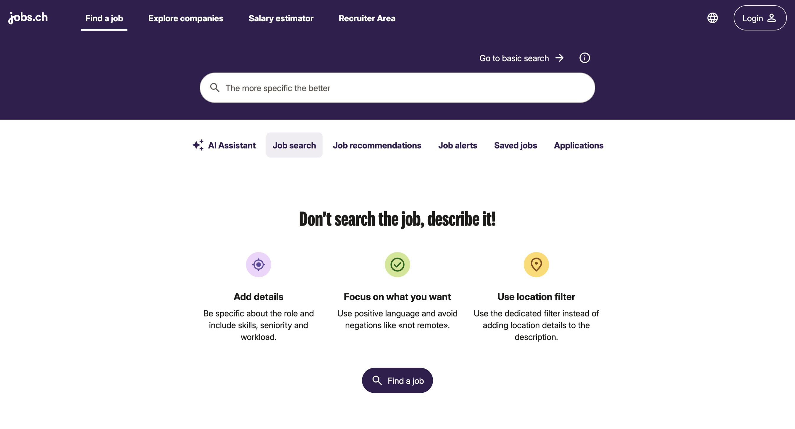
The problem
New visitors often arrive with an intention rather than a precise job title. They may know what kind of work they want, what they have experience in, where they want to work, or what constraints matter—but not the exact keywords or filters to enter.
The existing experience began with a blank search box and expected users to translate that thought into the platform’s vocabulary before the product could help.
Internal analytics suggested that approximately 68% of first-time queries were vague, empty, or overly broad. First-visit application starts were 6.7%, compared with 10.5% on return visits. These figures established the context for the opportunity; they do not show that the assistant improved conversion.
~68%
vague, empty, or overly broad first-time queries
6.7% vs. 10.5%
first-visit vs. return-visit application starts
Source: internal analytics (Google Analytics and Tableau). These figures describe the problem; they are not results of the assistant.
Scope
The broader product direction was to move from a blank search box toward a system that could learn about a job seeker progressively through search, saved jobs, alerts, and future interactions.
I designed the experience end to end. The focus was on the interface and on shaping the assistant’s responses: what it asks, when it asks for clarification, and how the conversation turns into a search, without turning the interaction into a long profile form.
The design will need further iteration once it is live and real usage data is available.
01
Capture intent
02
Deliver useful results
03
Save intent / create an alert
04
Build continuity over time
Designed end to end, with a focus on the interface and the assistant’s responses. Next: iterate once live, using real usage data.
Design challenge
The assistant needed to collect enough information to improve a search without making the interaction feel like a form. It also needed to avoid guessing. For example, “I want a job at Migros” names an employer but does not explain what kind of role the person wants.
The design question was:
How might we capture enough intent during a first visit to give a job seeker useful results—without forcing a long profile flow or pretending the system understands more than it does?
Research and iteration
I ran two rounds of moderated usability testing, with six participants in each round. Round 1 tested a pop-up modal containing a set of filters. Participants understood it as helpful guidance, but found it underwhelming as an AI experience. Most of them already used AI in their job search in some way and expected something similar, not basic filters split into steps.
The modal was also hard to read. The job search page is already content-heavy, and a pop-up of filters on top of it was not a good solution, especially for older participants.
Those findings changed the interaction model. For Round 2, I designed a dedicated view with real AI capabilities: in one chat, users could reach all of the platform’s search features in natural language. The assistant gathered information conversationally while building structured search criteria in the background.
Classic search remained the default entry point; this was not an agent-first redesign. Participants found the assistant quickly and understood what it was before opening the tab.
Round 1
Guided filter modal

Design pivot
From collecting filter inputs to helping users articulate intent.
Round 2
Dedicated assistant conversation
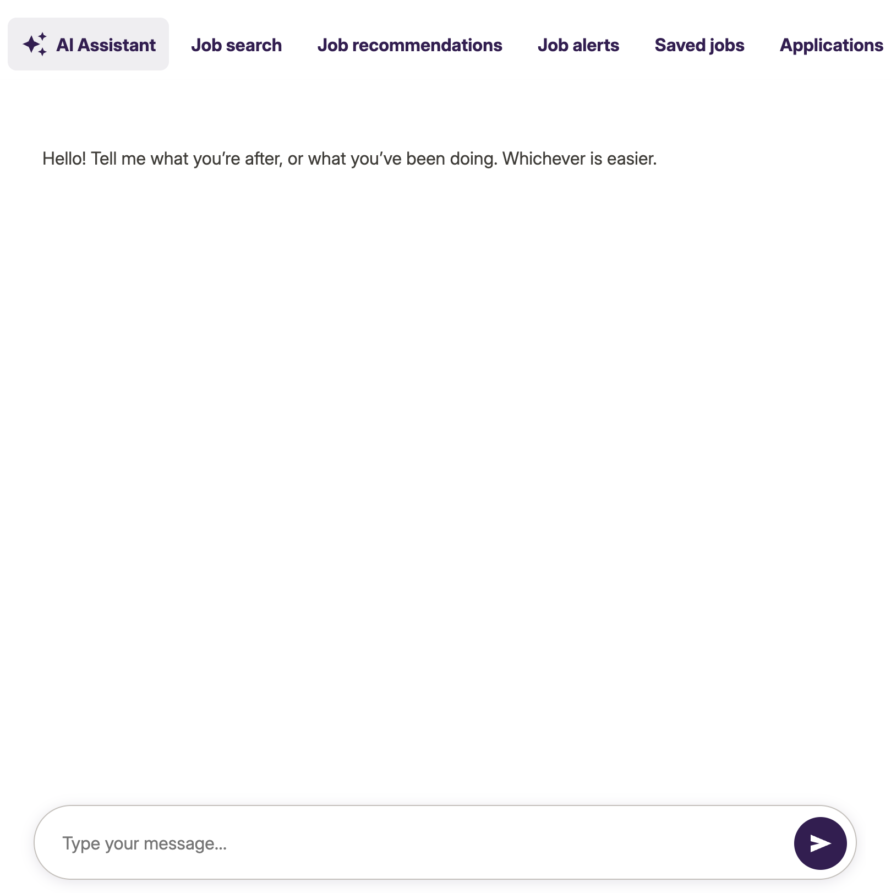
How the new flow works
01
Open prompt 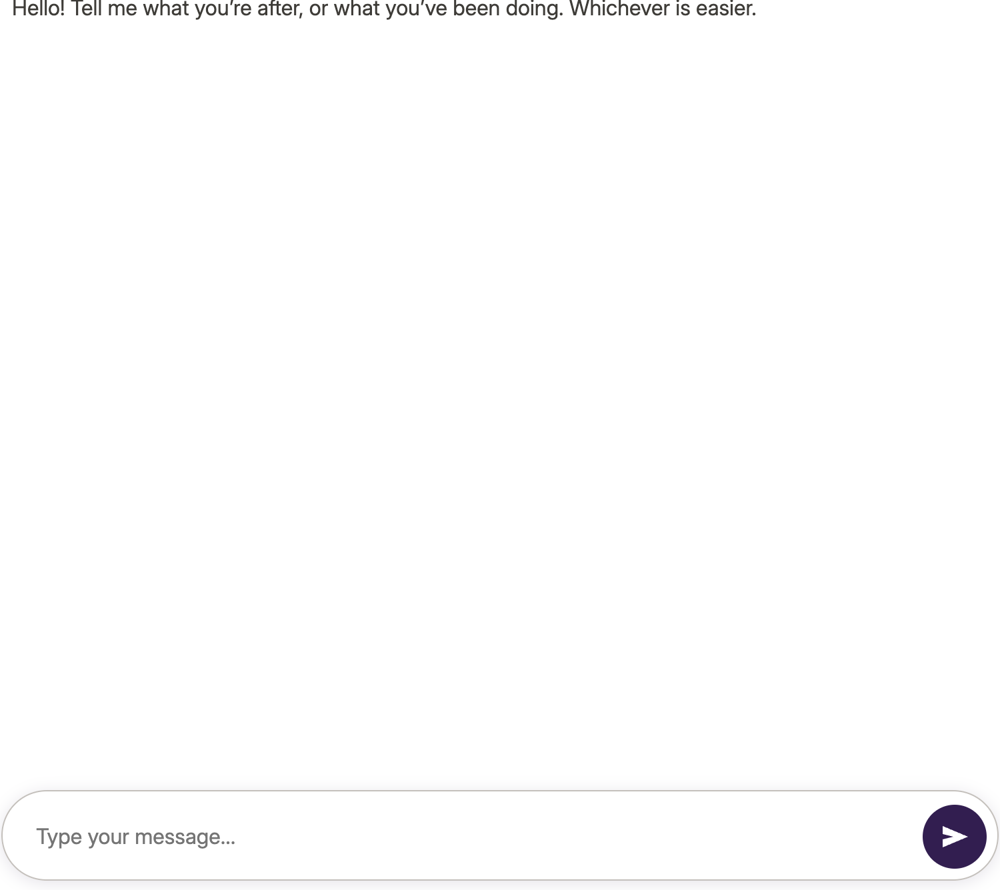
02
User describes a goal or experience 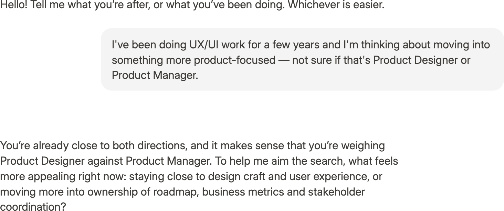
03
Assistant asks a focused clarification 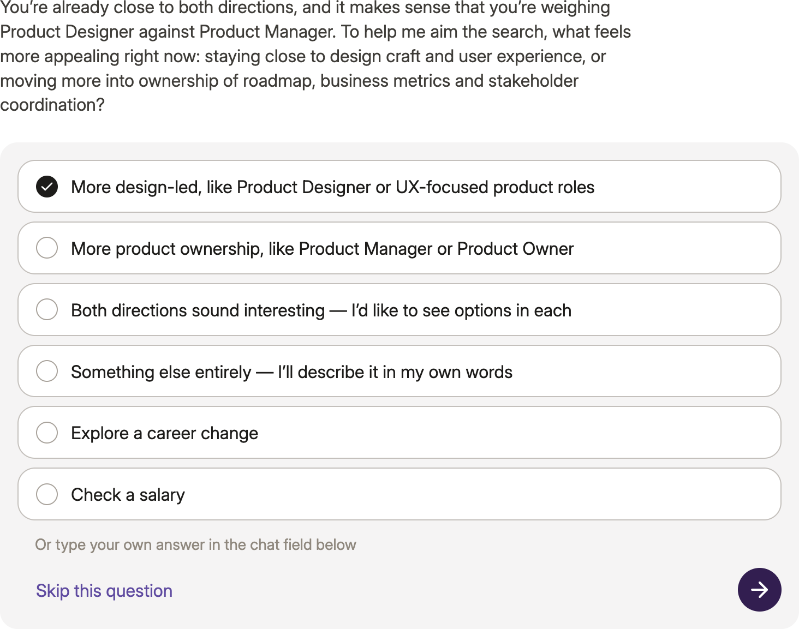
04
Follow-up questions narrow the search 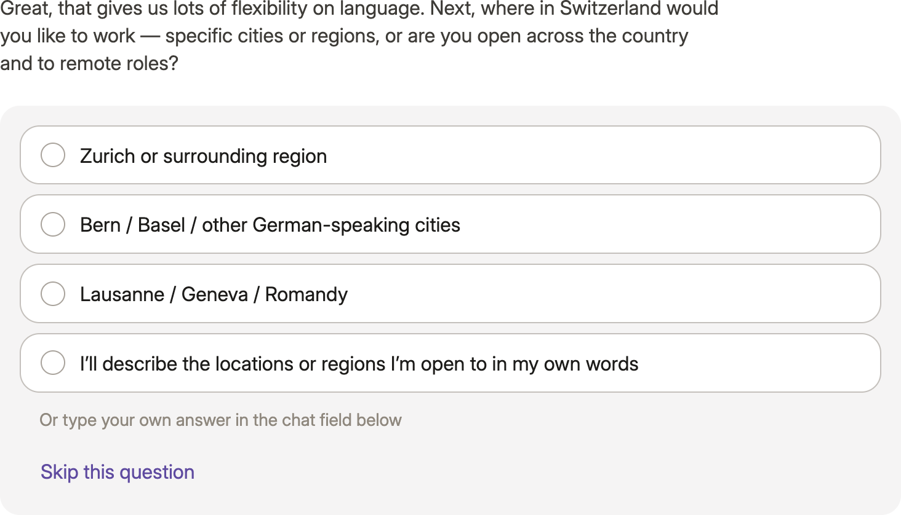
05
Job results and next actions 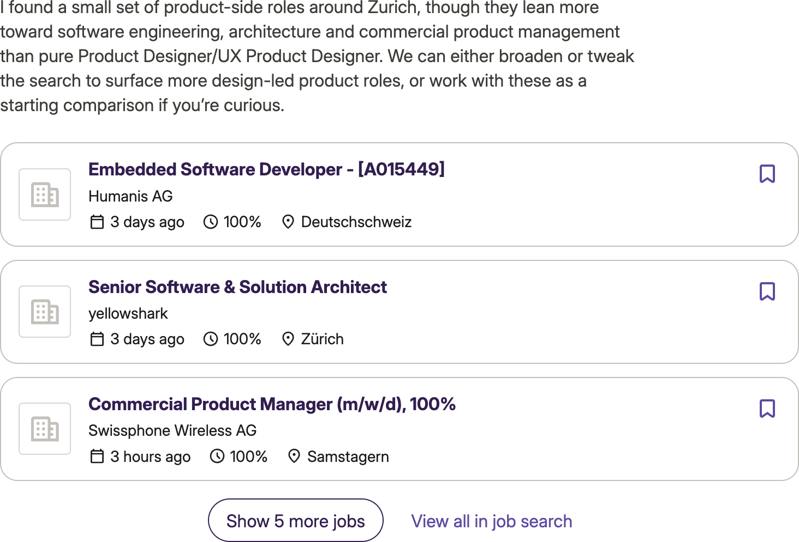
Conversation history
Earlier conversations stay within reach.
A side panel lists recent conversations. Users can start a new one, or rename and delete earlier ones.
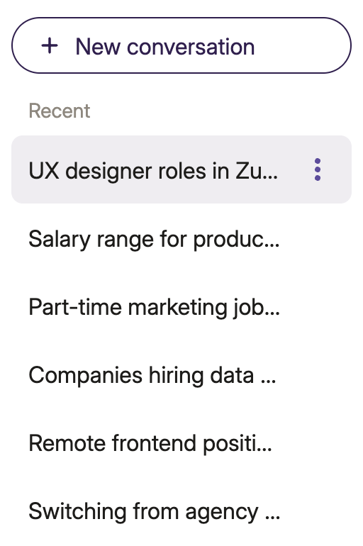
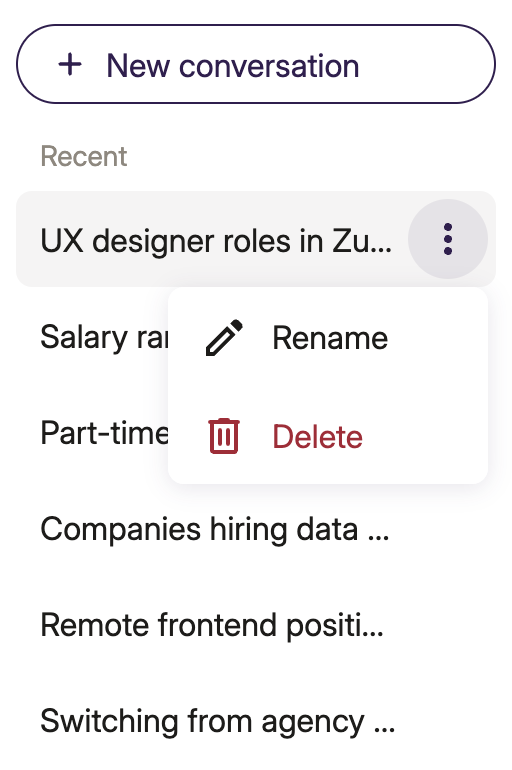
Key design decisions
1. Start with the user’s words
The first concept led with a fixed set of questions. I changed the opening to a single, low-pressure invitation so users could begin with either an aspiration or their current experience.
“Tell me what you’re after—or what you’ve been doing. Whichever is easier.”
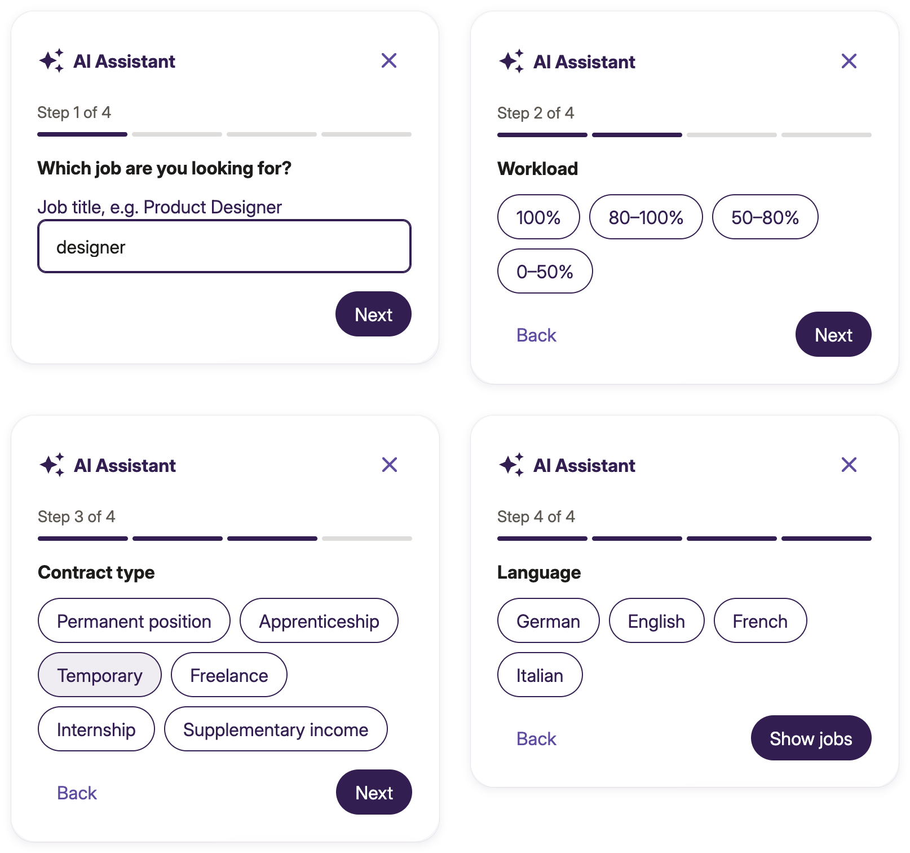
From selecting filters to describing intent.
2. Clarify ambiguity instead of guessing
Some inputs sound confident but do not give enough information for search. A company name alone, multiple possible directions, a negation, or a past role plus a new target can each require clarification.
I designed focused follow-up patterns to make unclear intent explicit and help the user decide what they meant, rather than silently guessing.
Illustrative example
A company name identifies an employer, not the role.
3. Treat results as a decision point
A result list should help users decide what to do next. The assistant’s proposed result experience included options to refine the search, keep users posted about similar jobs, and explore relevant information.
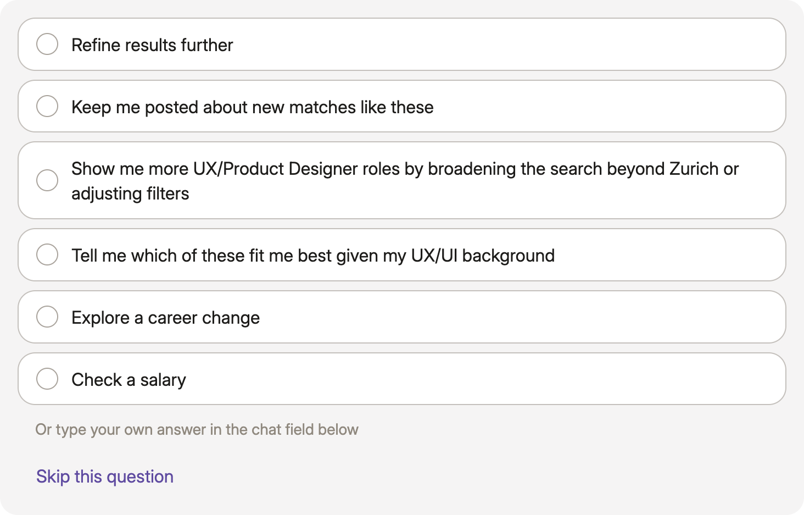
What testing taught me
In Round 2, participants saw natural-language search as a flexible way to express detailed needs. They particularly valued the potential to discover related roles, synonyms, and alternative titles they might not have searched for directly.
Testing also revealed expectations beyond the conversation itself:
- Users expected job ads to open without losing their conversation or results.
- They expected chat, filters, preferences, and saved searches to persist when moving between the assistant and classic search.
- They wanted AI summaries to remain secondary to the employer’s original job-ad content.
- They expected multi-select to be available for relevant criteria such as roles, skills, location, and work preferences.
These are qualitative findings from prototype testing, not measured launch outcomes.
What participants valued
- Expressing detailed needs in natural language
- Discovering related roles and alternative titles
- Finding the assistant quickly and knowing what it does
What they expected next
- Preserve conversation and search state
- Keep original job-ad content available
- Support multi-select where useful
Outcome and next step
The assistant was a tested prototype and had not launched. The two rounds helped us move from a modal that felt like guided filtering to a dedicated conversational experience that participants could discover and understand.
The next step was to validate the experience in a real product setting. Useful post-launch measures could include assistant discovery and activation, search refinement, relevant-result engagement, application starts, account creation, and alert adoption. These are proposed measures, not results from this prototype work.
Validated qualitatively
- Users understood the assistant’s purpose
- Natural language felt useful for expressing intent
- Participants expected continuity and control
To validate after launch
- Result relevance and engagement
- Application starts
- Account creation and alert adoption